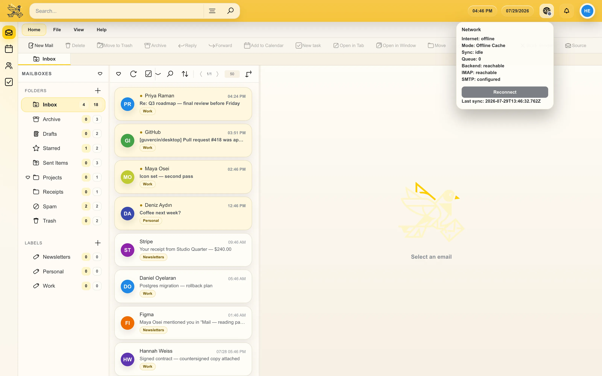

v0.1.0 · free & open source
your inbox, on your desktop
a free, open source email client for macOS, Windows and Linux — with a calendar, contacts and tasks built in. your mail lives on your machine, not on ours.
free forever · no account required · no tracking · view on GitHub


- 100% open source
- no ads, no tracking
- works with any IMAP account
- 64 languages
- macOS, Windows & Linux
what you get
all your accounts in one place
add as many IMAP and SMTP accounts as you like, or sign in to Google with one click.
more than mail
a calendar, an address book and a task list, in the same window.
private by design
messages sit in an encrypted local database on your computer, and nothing is uploaded to us.
yours to keep
open source, free forever, no subscription and nothing to upgrade.
no install, no account
try guvercin before you download it
a live version runs in your browser, so you can click through the mail view, the calendar and the settings without putting anything on your disk.
the desktop app is the real thing — this is just a look around first.


email that feels like a desktop app
a full folder tree you can reorder, conversation view you can switch off, and a reading pane you can move to wherever you actually read. per-account theme and font size are remembered, so a work account can look nothing like a personal one.
search runs against the local database, which means it also runs on a train with no signal. so do your attachments and inline images.
we cannot read your mail, and neither can anyone else
there is no guvercin cloud. the app connects from your computer straight to your own provider, and everything it keeps — messages, drafts, attachments, calendar events, contacts, tasks — is stored in a local database on your disk. there is no telemetry, no crash reporting and no advertising, and no account to create in the first place.
we have nothing to sell, because we never receive anything.
questions people ask first
is guvercin really free?
yes. it is free and open source, with no subscription, no paid tier and nothing to upgrade to. the one thing you may not do is sell it.
which email providers work?
any provider that speaks IMAP and SMTP — Gmail, Outlook and Hotmail, Yandex, iCloud, Fastmail, your university, your own server. Google accounts can sign in with a single click.
where is my mail stored?
in a local database on your own computer. nothing reaches our servers, because there are no servers.